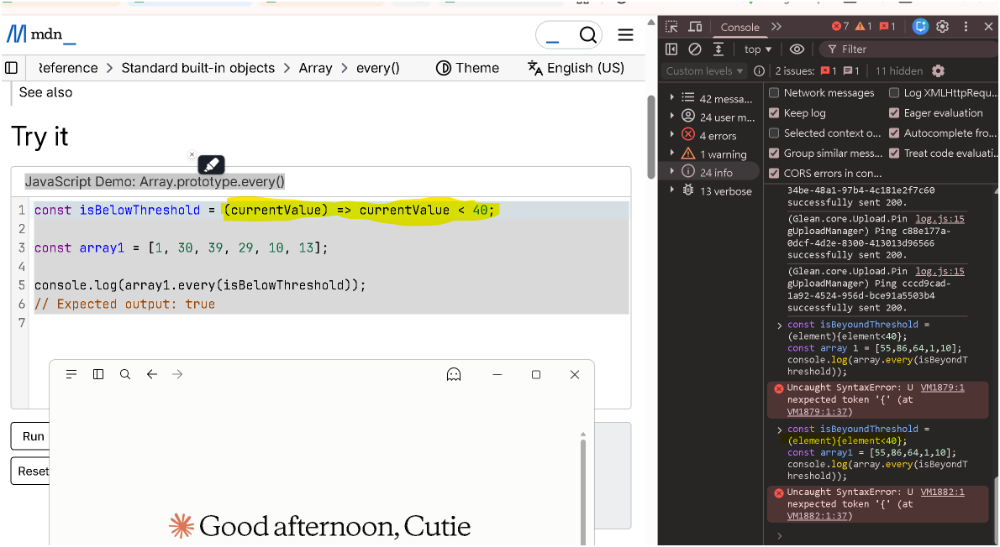

06-every短路求值與初始長度快照-命令式重構為宣告式.md。
=> 被刪掉之後沒有補上 function，parser 只好把 (element) 當成一個普通的括號表達式，
後面的左大括弧就變成非法 token。另外，一般函式的大括弧沒有隱式回傳，return 必須自己寫。
這張圖是本篇的定位圖。點任何一個方框看解說。之後同主題的追問，都會指回這張圖上的某一格，不另開章節。
(element){element<40}，走的是右側 否 → 是 → 紅色的 SyntaxError。function 卻忘記 return，走的是左側 block body → 沒寫 return → 回傳 undefined，
那條路不報錯但答案永遠是 false，其實更難抓。
const isBelowThreshold = (currentValue) => currentValue < 40const 宣告一個不可重新賦值的綁定，名字叫 isBelowThreshold。
isBelowThreshold = 別的東西。=> 是箭頭函式。它跟 function 的行為差別有五個：沒有自己的 this、沒有 arguments、不能 new、沒有 prototype 屬性、不能當 generator。當 callback 用時這五件事通通不需要，所以箭頭函式最合適。(currentValue) 是形式參數（parameter）。
every 時，陣列每一個元素會被當成實際參數（argument）餵進來。currentValue < 40 是 簡潔主體（concise body），等同於 { return currentValue < 40 }，運算結果自動被 return。< 是嚴格小於，不含等於。40 本身會得到 false。
Uncaught SyntaxError: Unexpected token '{'，游標指在第 1 行左大括弧的位置。左側 MDN 頁面上被螢光筆標起來的正是原本的箭頭函式寫法。你實際貼進 Console 的是這三行：
const isBeyondThreshold = (element){element<40};
const array 1 = [55,86,64,1,10];
console.log(array.every(isBeyondThreshold));=>，沒補 function=> 不是可省略的裝飾符號，它是 箭頭函式唯一的識別 token。拿掉它又沒補 function，你留下的 (element) 在文法上只是 一個被小括弧包住的表達式，意思是「一個叫 element 的變數，外面套了一層括號」。一個表達式後面直接接左大括弧，文法上接不下去，parser 只能拋
SyntaxError。
情境：parser 從左到右一個 token 一個 token 讀。讀到 ( 的當下，它還不知道這是「括號表達式」還是「箭頭函式的參數列」，因為兩者開頭長得一模一樣。
ECMA-262 的解法：先定義一條夠寬鬆的產生式
CoverParenthesizedExpressionAndArrowParameterList，把括號裡的東西照單全收，不下定論。接著看下一個 token：
| 下一個 token | parser 怎麼做 | 結果 |
|---|---|---|
=> | 回頭把剛才收下的內容 reinterpret 成 ArrowParameters 參數列 | 組出箭頭函式 |
| 其他 | 定案為 ParenthesizedExpression，內容永遠是「表達式」 | 你走的就是這條 |
所以 element 被當成一個變數名而不是參數名，後面的 { 就成了非法 token。
順帶一提：規範規定 => 前面不可以換行（[no LineTerminator here]），因為換行會讓這個「回頭重讀」的機制失效。
return 要自己寫// ❌ 語法過了，但每一圈都回 undefined
const isBelowThreshold = function (element) { element < 40 }
;[55, 86, 64, 1, 10].every(isBelowThreshold) // false，理由是 undefined 是 falsy
// ✅ 一般函式的大括弧一律是 block body，必須明寫 return
const isBelowThreshold = function (element) { return element < 40 }箭頭函式的 concise body 有 隱式回傳（implicit return），function 完全沒有這回事。這條路在主軸圖上是左側的 block body → 沒寫 return。
const array 1 中間多一個空白識別碼（identifier）不能包含空白字元，array 1 會被切成 array 與 1 兩個 token。parser 讀完 const array 就以為宣告到此為止，於是抱怨的其實是
Missing initializer in const declaration，不是 Unexpected token。
你之所以只看到左大括弧那個錯，是因為 引擎在 parse 階段遇到第一個語法錯誤就整段中止，後面幾行根本沒被檢查。
array1 卻呼叫 array就算前面三個都修好，這行會丟 Uncaught ReferenceError: array is not defined。這是 parse 期錯與執行期錯的分界：前三個在程式碼還沒開始跑就被擋下，這個要跑到那一行才會爆。
你取名 isBeyondThreshold（超過門檻），條件卻寫 < 40（低於門檻）。用你的資料實測，兩種條件都會得到 false，但理由完全不同：
| 寫法 | 逐圈發生什麼事 | 跑幾圈 | 結果 |
|---|---|---|---|
[55,86,64,1,10].every(v => v < 40) | 第 1 圈 55 < 40 就是 false，立刻短路 | 1 | false |
[55,86,64,1,10].every(v => v > 40) | 55✓ 86✓ 64✓ 都過，第 4 圈 1 > 40 才 false | 4 | false |
// 寫法 A：箭頭函式 ＋ concise body（MDN 用的，最短）
const isBelowThreshold = (currentValue) => currentValue < 40
// 寫法 B：函式運算式 function expression ＋ block body，必須寫 return
const isBelowThreshold = function (currentValue) {
return currentValue < 40
}
// 寫法 C：函式宣告 function declaration，會被 hoist 到作用域頂端
function isBelowThreshold(currentValue) {
return currentValue < 40
}
const array1 = [1, 30, 39, 29, 10, 13]
console.log(array1.every(isBelowThreshold)) // trueconsole.log 後面也能用；
寫法 A 與 B 都綁在 const 上，有 TDZ，必須先宣告後使用。
口語上可以，別人聽得懂，但 規範裡沒有「普通函式」這個術語。MDN 在跟箭頭函式對比時用的字是 traditional function 或 regular function，中文社群翻成「一般函式」或「傳統函式」比較通用。建議統一用「一般函式」。
| 你想講的東西 | 建議中文 | 英文 | ECMA-262 產生式名稱 |
|---|---|---|---|
function f() {} | 函式宣告 | function declaration | FunctionDeclaration |
const f = function () {} | 函式運算式（匿名） | anonymous function expression | FunctionExpression |
const f = function g() {} | 具名函式運算式 | named function expression | FunctionExpression |
const f = () => {} | 箭頭函式 | arrow function | ArrowFunction |
| 前三者的統稱，用來對比箭頭函式 | 一般函式／傳統函式 | traditional / regular function | 無專屬產生式 |
const f = () => {} 同樣是「把一個函式運算式賦值給 f」。function 關鍵字） vs 箭頭函式（=>） ← 決定有沒有自己的 this / arguments / prototypeevery() 一開始執行時就把 length 拍了一張快照，之後你在 callback 裡怎麼 push，它都不會多跑那幾圈。
const arr = [1, 2, 3]
arr.every((val, index, array) => {
array.push(99) // 每一圈都往後面塞新元素
console.log(`檢查索引 ${index}，值為 ${val}`)
return val < 10
})
// 檢查索引 0，值為 1
// 檢查索引 1，值為 2
// 檢查索引 2，值為 3
// arr 最後是 [1, 2, 3, 99, 99, 99]，但那三個 99 完全沒被檢查過array 是 callback 的第三個參數，指向原陣列本體（傳址），所以 array.push 真的會改到 arr。pop() 或 splice() 刪掉元素，走到那些索引時會讀到 undefined。規則不是「陣列被凍結」，而是「圈數被凍結」。forEach、map、filter、some、every。!isValid(request) 的邏輯拆解for (const request of requests) {
if (!isValid(request)) { everyRequestValid = false; break }
}| request 狀態 | isValid(request) | !isValid(request) | 進 if 嗎 |
|---|---|---|---|
| 無效 | false | true | 進去，標記失敗並 break |
| 有效 | true | false | 不進去，繼續下一筆 |
翻成人話：「只要發現任何一個 request 無效，就把整體標記為無效並跳出迴圈。」
every// 重構前（命令式 Imperative）
let everyRequestValid = true
for (const request of requests) {
if (!isValid(request)) { everyRequestValid = false; break }
}
if (everyRequestValid) { /* ... */ }
// 重構後（宣告式 Declarative）
if (requests.every(isValid)) { /* ... */ }requests.every(isValid) 直接用英文語意說「是不是每個都有效」。for...of、if、手動 break、最後那個 if。let，就少一個被誤改的風險。every() 遇到第一個 false 就立刻停，效能跟手寫 break 完全相同。[].every(fn) 回傳
true（vacuous truth 空真），
[].some(fn) 回傳 false。
如果 requests 可能是空的，要先確認「零筆算不算通過」符合商業邏輯。
(element){element<40} 的錯誤訊息指在左大括弧，而不是指在 element？因為 (element) 這一段在文法上完全合法——它就是一個被括號包住的識別碼表達式。parser 讀到這裡沒有任何理由報錯。真正接不下去的是下一個 token：一個表達式後面不能直接跟一個區塊。所以錯誤訊息自然落在 { 上。
更精確地說，parser 讀到 ( 時套用掩護文法 CoverParenthesizedExpressionAndArrowParameterList 把內容暫存，看到下一個 token 不是 =>，就把它定案成 ParenthesizedExpression。這一刻 element 的身分從「可能是參數」變成「確定是變數」，後面的 { 就無處可歸。
return」為什麼比「SyntaxError」更危險？請用 every 與 some 各舉一例說明後果。SyntaxError 會在 parse 階段被擋下，程式根本跑不起來，你一定會發現。忘記 return 語法完全合法，函式默默回傳 undefined，是 falsy 值，所以：
arr.every(function (v) { v < 40 }) → 第一圈就 falsy，永遠回傳 false，而且短路，看起來「跑很快」，很容易被誤判成效能優化成功。arr.some(function (v) { v < 40 }) → 每一圈都 falsy，跑完全部，永遠回傳 false，同樣不報錯。兩者都會讓後續的 if 判斷永遠走同一條分支，在測試資料剛好也該回 false 的時候完全看不出來，上線後才炸。
寫法差別（語法糖層次）：參數小括弧在單一參數時可省略；主體不加大括弧時是 concise body，會隱式回傳；加了大括弧就是 block body，要自己寫 return。這一層純粹是打字多寡。
行為差別（語意層次，面試重點）：箭頭函式沒有自己的 this（沿用外層詞法作用域）、沒有 arguments 物件、不能用 new 呼叫、沒有 prototype 屬性、不能當 generator。這一層決定了「能不能拿來當方法、當建構子、當 thisArg 的接收者」，換掉會改變程式行為，不是換個寫法而已。
收尾可以補一句：正因為 callback 通常不需要這五件事，箭頭函式才成為 callback 的預設選擇。
| 題號 | 題名 | 為什麼相關 |
|---|---|---|
| 2634 | Filter Elements from Array | 手刻 filter，逼你面對 callback 三參數與長度快照 |
| 2635 | Apply Transform Over Each Element | 手刻 map，同一族簽名 |
| 2626 | Array Reduce Transformation | 累加器版本的高階函式 |
| 2620 | Counter | 回傳函式本身 vs 回傳呼叫結果，逼你分清 concise body 與 block body |
| 2703 | Return Length of Arguments Passed | 必須用一般函式或 rest 參數，因為箭頭函式沒有 arguments，正好驗證 (b) |
| 主題 | 連結 | 版本／查證時間 |
|---|---|---|
MDN Array.prototype.every() | every() | 2026-09-18 |
| MDN 箭頭函式（concise body、traditional function 用語） | Arrow function expressions | 2026-09-18 |
| MDN 函式運算式 | function expression | 2026-09-18 |
| MDN 函式宣告 | function declaration | 2026-09-18 |
| ECMA-262 掩護文法 | CoverParenthesizedExpressionAndArrowParameterList | ES2026 草案，2026-09-18 |
ECMA-262 ArrowFunction | Arrow Function Definitions | ES2026 草案，2026-09-18 |
| Gemini 對話：箭頭函式與 every 初始長度 | 對話連結 | 2026-08 |
Gemini 對話：!isValid 與 every 重構 | 對話連結 | 2026-08 |
[].every() 回傳 true，這兩點是 (p)(v) 補上的。
Gemini 對話歸檔於 2026-08-25 · Claude 補充第二、三節與主軸圖於 2026-09-18